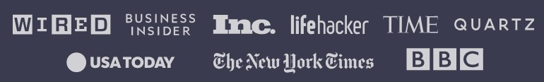

freeCodeCamp students at a local study group in South Korea.
As seen in:
Here is what our alumni say about freeCodeCamp:

Shawn Wang in Singapore
Software Engineer at Amazon
"It's scary to change careers. I only gained confidence that I could code by working through the hundreds of hours of free lessons on freeCodeCamp. Within a year I had a six-figure job as a Software Engineer. freeCodeCamp changed my life."

Sarah Chima in Nigeria
Software Engineer at ChatDesk
"freeCodeCamp was the gateway to my career as a software developer. The well-structured curriculum took my coding knowledge from a total beginner level to a very confident level. It was everything I needed to land my first dev job at an amazing company"

Emma Bostian in Sweden
Software Engineer at Spotify
"I've always struggled with learning JavaScript. I've taken many courses but freeCodeCamp's course was the one which stuck. Studying JavaScript as well as data structures and algorithms on freeCodeCamp gave me the skills and confidence I needed to land my dream job as a software engineer at Spotify."
Earn free verified certifications with
freeCodeCamp's core curriculum:
Earn free professional certifications:
Prepare for the developer interview job search:
Frequently asked questions:
What exactly is freeCodeCamp?
freeCodeCamp is a community of people from all around the world who are learning to code together. We're a 501(c)(3) public charity.
How will freeCodeCamp help me learn to code?
You will learn to code by building dozens of projects, step-by-step, right in your browser, code editor, or mobile app. You will also earn free verified certifications along the way.
Is freeCodeCamp really free?
Yes. Every aspect of freeCodeCamp is 100% free. The courses, the projects, and even the certifications.
Can freeCodeCamp help me get a job as a software developer?
Yes. Every year, thousands of people who join the freeCodeCamp community get their first software developer job.
What skills will I learn?
You will learn the skills most developers use on the job: HTML, CSS, JavaScript, Python, Linux, Git, and SQL, and more. You'll also learn how to use powerful libraries for web development, mobile app development, data science, and artificial intelligence.
How long does it take to learn all this?
freeCodeCamp is self-paced. Realistically, it may take several years of practicing coding to learn these skills well enough to get a job as a software engineer. Don't quit school or your day job until you feel ready.
How do I get started?
If you're a beginner, you should start at the beginning of the freeCodeCamp core curriculum. If you're more advanced, we still recommend starting at the beginning, but you can skip to whatever area you wish.
How do I earn the free verified certifications?
For each certification, you need to build its 5 certification projects, and get all of the project tests to pass to be able to claim your certification.
I don't see [name of tool] in the freeCodeCamp core curriculum.
Aside from the freeCodeCamp core curriculum, We have thousands of free, full-length books, courses, and programming tutorials. We almost certainly teach whatever programming tools you want to learn. Just use the search bar.